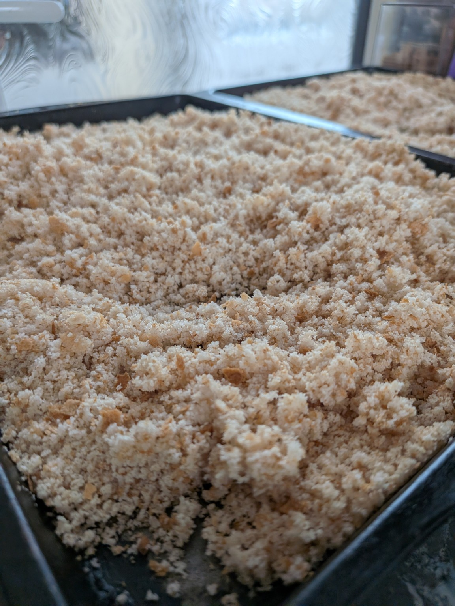

Homemade Gluten-Free Breadcrumbs
Making my own gluten-free breadcrumbs is a great way to use up leftover gluten-free bread. I often buy reduced gluten-free loaves and make a large batch to keep in the freezer.

Ingredients
- Gluten-free bread
Method
- Break the gluten-free bread into chunks and blitz in a food processor until you have breadcrumbs.
- Spread the breadcrumbs evenly onto a baking tray.
- Bake in the oven for around 20 minutes, until golden and crispy.
- Allow the breadcrumbs to cool completely.
- Transfer to a freezer bag and store in the freezer until needed.
How I Use My Breadcrumbs
I use these breadcrumbs for homemade chicken nuggets, chicken fillets, breaded prawns, mozzarella sticks and halloumi sticks.
They're so handy to have in the freezer, ready whenever I need them.